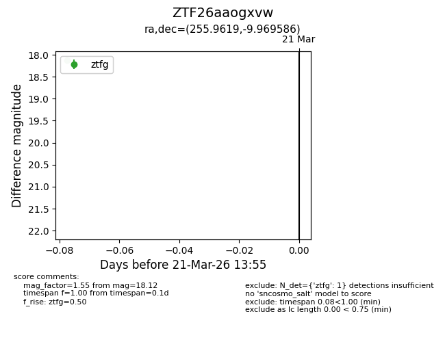
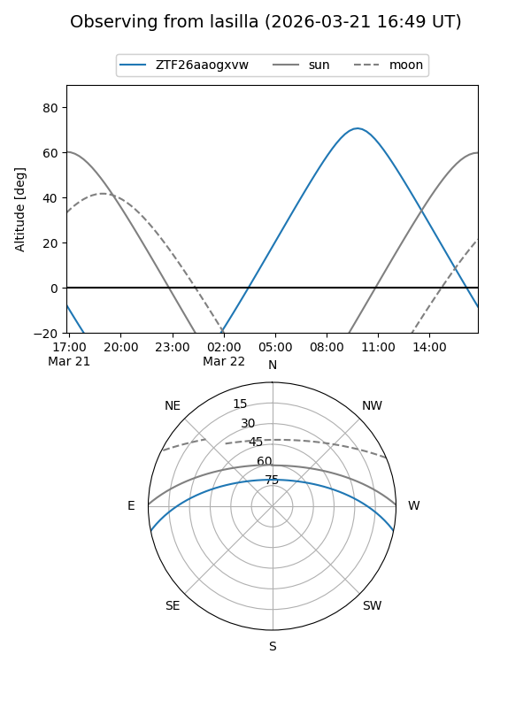
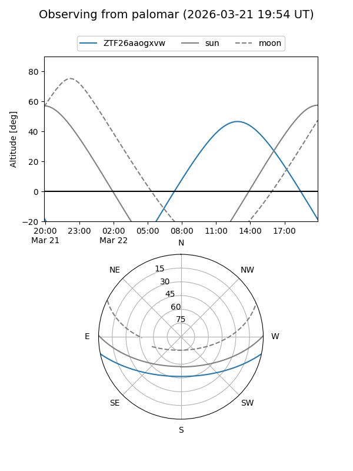

ZTF26aaogxvw
Target ZTF26aaogxvw at 2026-03-21 13:57
Aliases and brokers:
FINK: link
Lasair: link
ALeRCE: link
alt names
ZTF26aaogxvw (ztf,fink_ztf)
Coordinates:
equatorial (ra, dec) = 255.9619,-9.96959
equatorial (HMS+DMS) = 17:03:50.85,-09:58:10.51
galactic (l, b) = (10.7989,+18.51823)
Flags:
Photometry:
last ztfg=18.12
1 ztfg detections
Lightcurve

Visibility


Additional plots